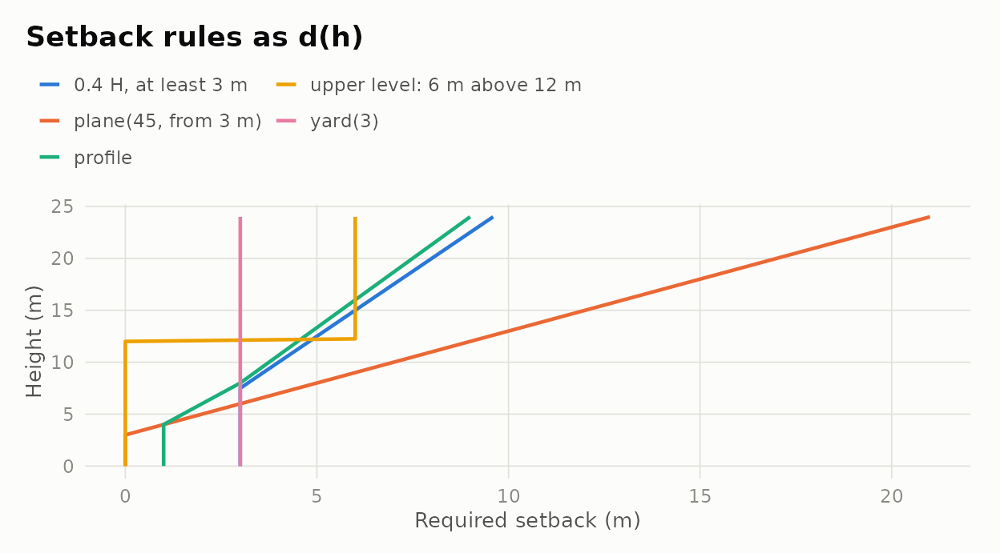

Every kind of rule plancap models, how it is computed, and how rules that overlap combine.
library(plancap)
#>
#> Attaching package: 'plancap'
#> The following object is masked from 'package:stats':
#>
#> density
library(ggplot2)How a site’s capacity is built
For each site the engine builds a stack of storeys. At each storey it works out, for every boundary, the deepest setback any applicable rule asks at that height, and clips the buildable ground back from each boundary by it. The clipped area is then capped by the site’s ratios (coverage, landscaping, floorplate limits), the stack is kept from ever widening as it rises, and a storey too small to build on ends it. Floor area ratios and site floor area limits then cap the total. Dwellings come from residential floor area, or from a density rule, by the zone’s method.
Setbacks: a distance as a function of height
Every rule that keeps a building back from a boundary is a setback profile, a required distance at each height . Yards, planes, upper-level setbacks and setbacks proportional to height are all special cases, so they combine the same way: at each boundary and storey, the largest distance wins.
h <- seq(0, 24, by = 0.25)
profile <- function(rule, name) data.frame(height = h, setback = setback_distance(rule, h), rule = name)
d <- rbind(
profile(yard(3, "side"), "yard(3)"),
profile(plane(45, start_height = 3, boundaries = "side"), "plane(45, from 3 m)"),
profile(upper_level_setback(6, "side", above_height = 12), "upper level: 6 m above 12 m"),
profile(proportional_setback(0.4, "side", min = 3), "0.4 H, at least 3 m"),
profile(setback_profile(c(0, 4, 8, 24), c(1, 1, 3, 9), "side"), "profile")
)
ggplot(d, aes(setback, height, colour = rule)) +
geom_path(linewidth = 0.8) +
scale_colour_capacity_d(name = NULL) +
labs(x = "Required setback (m)", y = "Height (m)", title = "Setback rules as d(h)") +
theme_capacity(grid = "both") +
guides(colour = guide_legend(ncol = 2))
Yards
yard(distance, boundaries): a fixed distance (or a
formula), optionally only from a storey up (from_storey) or
above a height (above_height). A yard may instead be set by
what is already there:
yard(value_from = "existing_front_setback") takes the
average setback of the dwellings on the neighbouring sites, measured
from building outlines
(find_existing_front_setbacks()).
Planes
plane(angle_deg, start_height, boundaries): a recession,
daylight or height-in-relation-to-boundary plane. Options cover the
forms plans use:
-
set_in: the plane starts a distance inside the boundary; -
angle_by_bearingandangle_by_orientation: an angle that depends on the direction the boundary faces (Christchurch grades its planes between north and south); -
vertical_above: the plane turns vertical above a height; -
max_setback_above: above a height, the lesser of the plane and a fixed setback; -
datum: measured from the ground at the boundary (default), the site’s mean ground, or the road.
On sloping ground a plane is measured from the ground at its own boundary, and the ground’s rise into the site slows the building’s gain on the plane.
p <- plane(60, start_height = 4, boundaries = "side")
setback_distance(p, c(4, 8, 12), slope_in = c(0, 0, 0))
#> [1] 0.000000 2.309401 4.618802
setback_distance(p, c(4, 8, 12), slope_in = 0.1)
#> [1] 0.000000 2.450904 4.901808Upper-level, proportional and profile setbacks
upper_level_setback() is an extra setback for the part
of a building above a height (a podium step-back).
proportional_setback() is a distance proportional to height
with a minimum and maximum (0.4H, at least 3 m).
setback_profile() is any piecewise-linear
for rules none of the others express.
Where a setback applies
boundaries names boundary classes (road,
side, rear) or tags (reserve,
riparian, coastal, lakeside,
zone_boundary); see boundary_classes().
when = conditions(...) restricts a rule to some sites or
boundaries:
names(formals(conditions))
#> [1] "min_site_area" "max_site_area" "rear_sites"
#> [4] "corner_sites" "within_frontage" "beyond_frontage"
#> [7] "frontage_depth_share" "adjacent_zones" "not_adjacent_zones"
#> [10] "facing" "min_road_width" "max_road_width"
#> [13] "min_slope" "max_slope" "distance_to"
#> [16] "min_distance" "max_distance"A boundary that crosses a distance at which a rule switches
(within_frontage, beyond_frontage) is cut
there, so each part takes its own rule. Water yards (riparian, coastal,
lakeside) are measured from the water, not from the boundary.
Alternative standards
Where a plan offers alternative sets of standards (Hamilton’s Medium
Density zone: one set for one or two units, another for three or more
attached units), each is a variant
(variant = "name" on the rules). The site is built under
each and takes the most enabling, or the one variant_choice
names.
Ratios
coverage, landscaping,
impervious and paved are shares of net site
area (ratio(0.5), or bands() by site area).
Coverage and landscaping do not add: each storey takes the most
restrictive of what they allow (landscaping at 25% leaves 75%
buildable, so a 50% coverage binds first). far (floor area
ratio) and form$max_site_floorspace cap the whole stack,
taking floor area off the top storeys first.
bands("site_area", upper = c(200, 500, Inf), value = c(0.6, 0.5, 0.4), source = "RES-S4")
#> $by
#> [1] "site_area"
#>
#> $bands
#> $bands[[1]]
#> $bands[[1]]$min
#> [1] 0
#>
#> $bands[[1]]$max
#> [1] 200
#>
#> $bands[[1]]$value
#> [1] 0.6
#>
#>
#> $bands[[2]]
#> $bands[[2]]$min
#> [1] 200
#>
#> $bands[[2]]$max
#> [1] 500
#>
#> $bands[[2]]$value
#> [1] 0.5
#>
#>
#> $bands[[3]]
#> $bands[[3]]$min
#> [1] 500
#>
#> $bands[[3]]$value
#> [1] 0.4
#>
#>
#>
#> $source
#> [1] "RES-S4"
#>
#> attr(,"class")
#> [1] "plancap_bands"Building form
building_form(): maximum and minimum floorplate, tower
floorplate above a height, building length and separation (cut as gaps
through the footprint), and the site shape factor, a
rectangle every vacant site created by subdivision must hold clear of
its yards (site_shape_factor()).
Height
height_limit() takes the total height, the occupiable
height and the roof allowance, and the storey count, or a height from an
overlay (from_overlay). Storey height is the zone’s
storey_height, else the occupiable height divided among the
stated storeys, else as many default-height storeys as fit. Height
overlays (type = "height") cap or replace a zone’s height;
height surfaces (rasters, such as viewshafts and airspace) cap it site
by site, or storey by storey where they cover part of a site.
Density and dwellings
A zone’s method sets how dwellings are counted:
-
volumetric: residential floor area, times
efficiency, over the dwelling size (
conversion()); -
density: the density rule (
density(): site area per dwelling, dwellings per hectare, or the vacant site minimum, with at least one dwelling on an existing lot); - hybrid: the lesser of the two;
- none: no capacity (open space, transport corridors).
Then, in order: large sites (the infrastructure deduction), the site
shape factor, sites with no buildable envelope, dwellings per site, the
access width table (measured from frontage, entrance strips, easements
and access lots: find_access_widths()), area totals, and
entitlements as a floor.
Overlays, areas, bonuses and entitlements
| Constructor | What it does |
|---|---|
overlay(type = "parameters") |
changes a zone’s rules where the overlay applies
(combine: cap, replace, floor, add, multiply) |
overlay(type = "height") |
a mapped height limit |
overlay(type = "height_surface") |
a raster of heights or elevations |
overlay(type = "exclusion") |
land off the buildable ground (removes = "all") or kept
from dwellings ("residential") |
overlay(type = "flag") |
marks sites, changes nothing |
area() / sub_area()
|
a precinct or other area replacing a zone’s rules, with dwelling or floor area totals shared across its sites |
bonus() |
extra height, floor area or dwellings where a condition is met, reported apart |
entitlement() |
a minimum guaranteed whatever the local rules say |
Rules resolve in order: the zone, then areas and sub-areas (which replace), then parameter overlays (in precedence order), then height overlays.